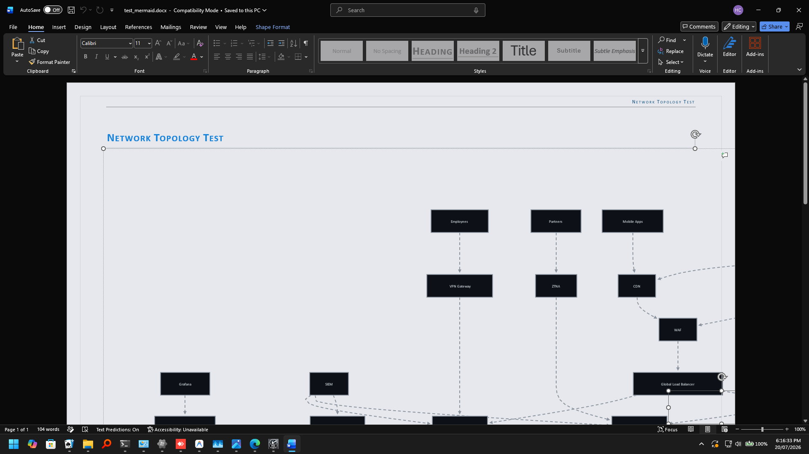
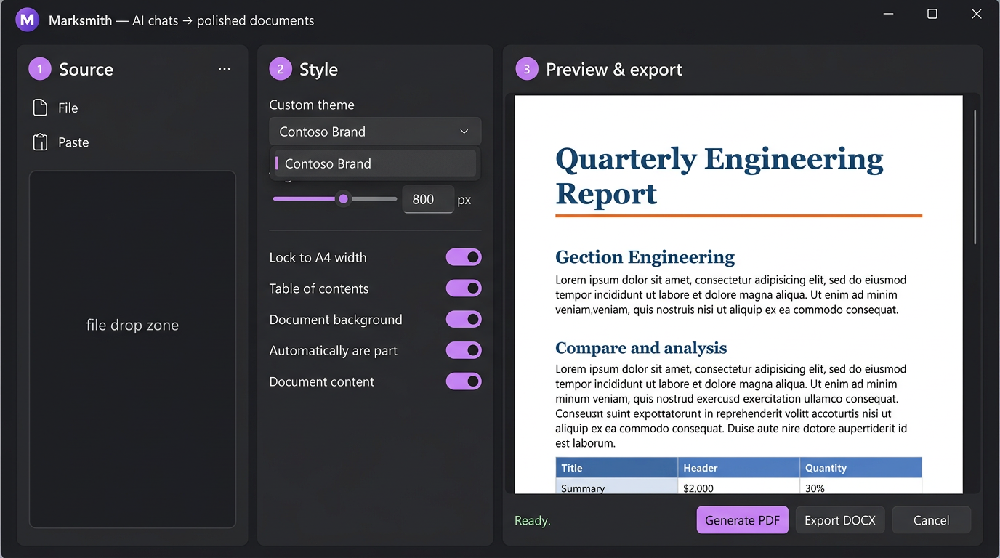
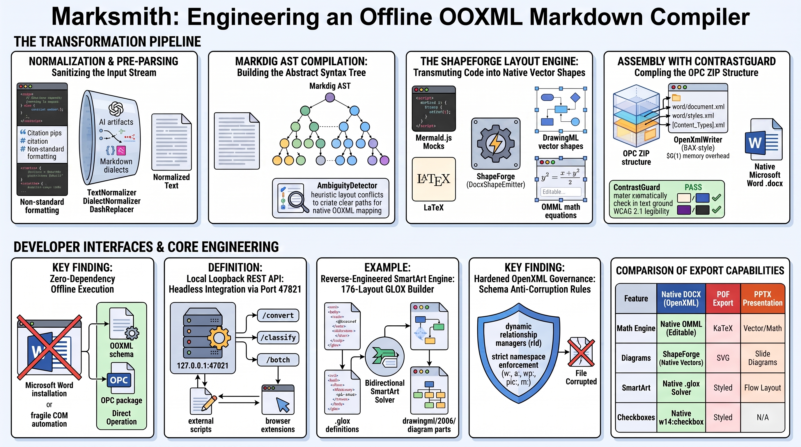
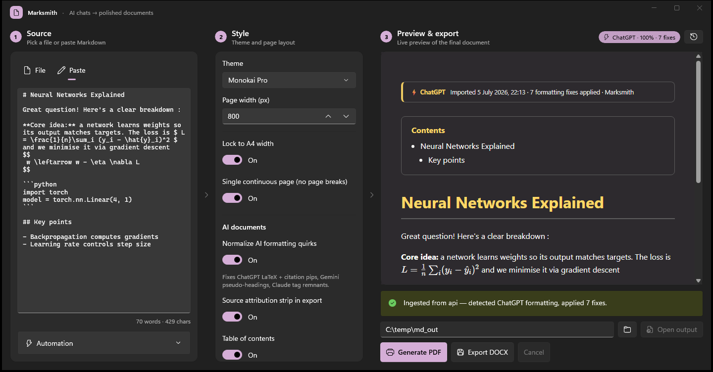
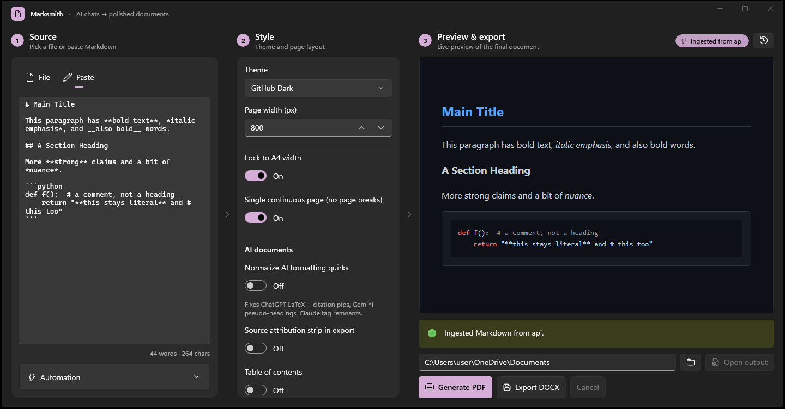
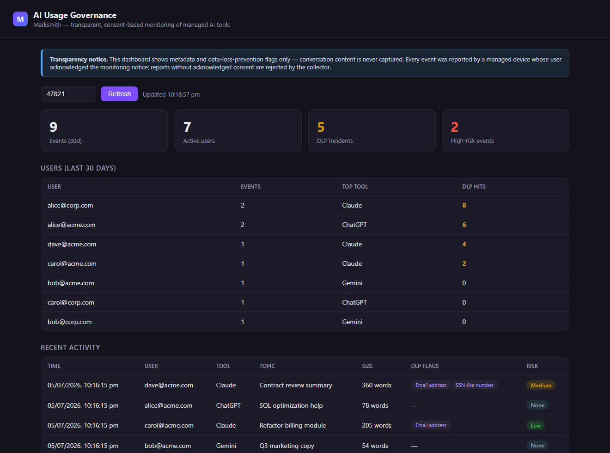

RECORDED FROM A RELEASE BUILD
This is the app. Actually running.
No mockup, no animation — captured off the real MarkSmith window in split view. The document streams in over the local POST /api/ingest endpoint, the same channel the browser extension uses. Then the Looking Glass opens, and a sentence typed through the aperture lands in all three places at once: the glass, the rendered page behind it, and the Markdown editor in the other pane.
Marksmith — Q4 Platform Review.md — Looking Glass
Screenshots, straight off the window
Every image below is a PrintWindow capture of the running Release build — nothing composited, nothing hand-drawn. Click any shot to enlarge or download the real compiled DOCX files to test in Word.


[12†source], stray :contentReference markers and \( \) math delimiters, all cleaned on the way to Word.






\( \) to standard LaTeX math, and strips leaked Markdown wrappers.


.rels manager guarantees zero 'File is corrupted' prompts.